Simulation Results using simulated (correlated)
shengqian
2023-12-3
Last updated: 2023-12-03
Checks: 6 1
Knit directory: multigroup_ctwas_analysis/
This reproducible R Markdown analysis was created with workflowr (version 1.7.0). The Checks tab describes the reproducibility checks that were applied when the results were created. The Past versions tab lists the development history.
The R Markdown file has unstaged changes. To know which version of the R Markdown file created these results, you’ll want to first commit it to the Git repo. If you’re still working on the analysis, you can ignore this warning. When you’re finished, you can run wflow_publish to commit the R Markdown file and build the HTML.
Great job! The global environment was empty. Objects defined in the global environment can affect the analysis in your R Markdown file in unknown ways. For reproduciblity it’s best to always run the code in an empty environment.
The command set.seed(20231112) was run prior to running the code in the R Markdown file. Setting a seed ensures that any results that rely on randomness, e.g. subsampling or permutations, are reproducible.
Great job! Recording the operating system, R version, and package versions is critical for reproducibility.
Nice! There were no cached chunks for this analysis, so you can be confident that you successfully produced the results during this run.
Great job! Using relative paths to the files within your workflowr project makes it easier to run your code on other machines.
Great! You are using Git for version control. Tracking code development and connecting the code version to the results is critical for reproducibility.
The results in this page were generated with repository version 93d4d29. See the Past versions tab to see a history of the changes made to the R Markdown and HTML files.
Note that you need to be careful to ensure that all relevant files for the analysis have been committed to Git prior to generating the results (you can use wflow_publish or wflow_git_commit). workflowr only checks the R Markdown file, but you know if there are other scripts or data files that it depends on. Below is the status of the Git repository when the results were generated:
Unstaged changes:
Modified: analysis/simulation_4tissues_correlated.Rmd
Note that any generated files, e.g. HTML, png, CSS, etc., are not included in this status report because it is ok for generated content to have uncommitted changes.
These are the previous versions of the repository in which changes were made to the R Markdown (analysis/simulation_4tissues_correlated.Rmd) and HTML (docs/simulation_4tissues_correlated.html) files. If you’ve configured a remote Git repository (see ?wflow_git_remote), click on the hyperlinks in the table below to view the files as they were in that past version.
| File | Version | Author | Date | Message |
|---|---|---|---|---|
| Rmd | 93d4d29 | sq-96 | 2023-12-03 | update |
| html | 93d4d29 | sq-96 | 2023-12-03 | update |
| Rmd | a69235e | sq-96 | 2023-12-03 | update |
| html | a69235e | sq-96 | 2023-12-03 | update |
source("/project2/xinhe/shengqian/cTWAS/cTWAS_analysis/analysis/simulation_help_functions.R")Simulation 1: Liver and three 95% correlated tissues
Shared effect size parameters
30% PVE and 2.5e-4 prior inclusion for SNPs, 5% PVE and 0.015 prior inclusion for Liver, 1% PVE and 0.003 prior inclusion for other three mixed groups.
results_dir <- "/project2/xinhe/shengqian/cTWAS/cTWAS_simulation/simulation_uncorrelated_four_tissues_95/"
runtag = "ukb-s80.45-3_corr"
configtag <- 1
simutags <- paste(1, 1:3, sep = "-")
thin <- 0.1
sample_size <- 45000
PIP_threshold <- 0.8#results using PIP threshold (gene+tissue)
results_df[,c("simutag", "n_causal", "n_detected_pip", "n_detected_pip_in_causal")] simutag n_causal n_detected_pip n_detected_pip_in_causal
1 1-1 176 1 1
2 1-2 178 3 3
3 1-3 200 5 3#mean percent causal using PIP > 0.8
sum(results_df$n_detected_pip_in_causal)/sum(results_df$n_detected_pip)[1] 0.7777778#results using combined PIP threshold
results_df[,c("simutag", "n_causal_combined", "n_detected_comb_pip", "n_detected_comb_pip_in_causal")] simutag n_causal_combined n_detected_comb_pip n_detected_comb_pip_in_causal
1 1-1 175 51 47
2 1-2 175 60 54
3 1-3 197 62 56#mean percent causal using combined PIP > 0.8
sum(results_df$n_detected_comb_pip_in_causal)/sum(results_df$n_detected_comb_pip)[1] 0.9075145#prior inclusion and mean prior inclusion
results_df[,c(which(colnames(results_df)=="simutag"), setdiff(grep("prior", names(results_df)), grep("prior_var", names(results_df))))] simutag prior_snp prior_weight1 prior_weight2 prior_weight3 prior_weight4
1 1-1 0.0002182741 0.008049709 0.002235799 0.008521669 0.002138643
2 1-2 0.0002292157 0.020976160 0.003852905 0.003329239 0.004967307
3 1-3 0.0002578078 0.024117884 0.004999158 0.001374073 0.003628265colMeans(results_df[,setdiff(grep("prior", names(results_df)), grep("prior_var", names(results_df)))]) prior_snp prior_weight1 prior_weight2 prior_weight3 prior_weight4
0.0002350992 0.0177145843 0.0036959539 0.0044083270 0.0035780717 #prior variance and mean prior variance
results_df[,c(which(colnames(results_df)=="simutag"), grep("prior_var", names(results_df)))] simutag prior_var_snp prior_var_weight1 prior_var_weight2 prior_var_weight3
1 1-1 9.932523 29.57061 29.57061 29.57061
2 1-2 8.836244 16.44995 16.44995 16.44995
3 1-3 8.211823 17.05528 17.05528 17.05528
prior_var_weight4
1 29.57061
2 16.44995
3 17.05528colMeans(results_df[,grep("prior_var", names(results_df))]) prior_var_snp prior_var_weight1 prior_var_weight2 prior_var_weight3
8.99353 21.02528 21.02528 21.02528
prior_var_weight4
21.02528 #PVE and mean PVE
results_df[,c(which(colnames(results_df)=="simutag"), grep("pve", names(results_df)))] simutag pve_snp pve_weight1 pve_weight2 pve_weight3 pve_weight4
1 1-1 0.2552079 0.03911705 0.009540975 0.036320293 0.009126375
2 1-2 0.2384209 0.05670435 0.009146453 0.007893582 0.011791945
3 1-3 0.2492114 0.06759641 0.012304258 0.003377792 0.008930126colMeans(results_df[,grep("pve", names(results_df))]) pve_snp pve_weight1 pve_weight2 pve_weight3 pve_weight4
0.247613377 0.054472603 0.010330562 0.015863889 0.009949482 #TWAS results
results_df[,c(which(colnames(results_df)=="simutag"), grep("twas", names(results_df)))] simutag n_detected_twas n_detected_twas_in_causal n_detected_comb_twas
1 1-1 352 53 98
2 1-2 274 50 79
3 1-3 307 54 86
n_detected_comb_twas_in_causal
1 53
2 50
3 53sum(results_df$n_detected_comb_twas_in_causal)/sum(results_df$n_detected_comb_twas)[1] 0.5931559
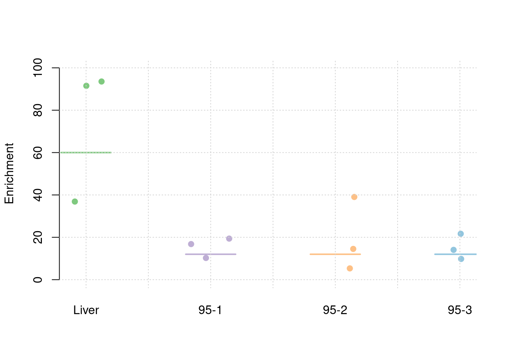
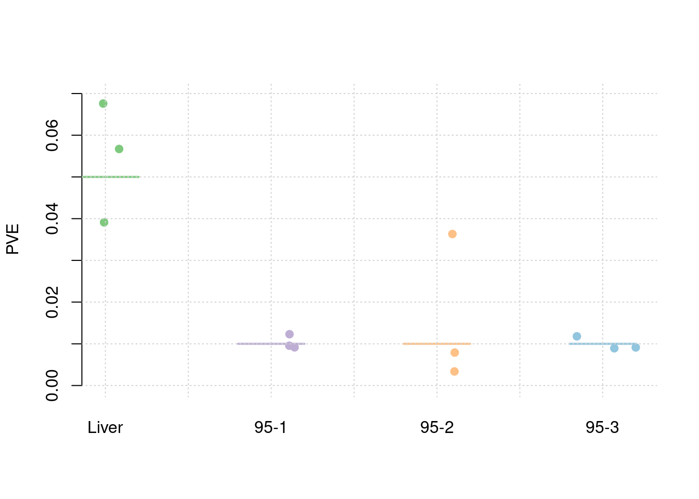
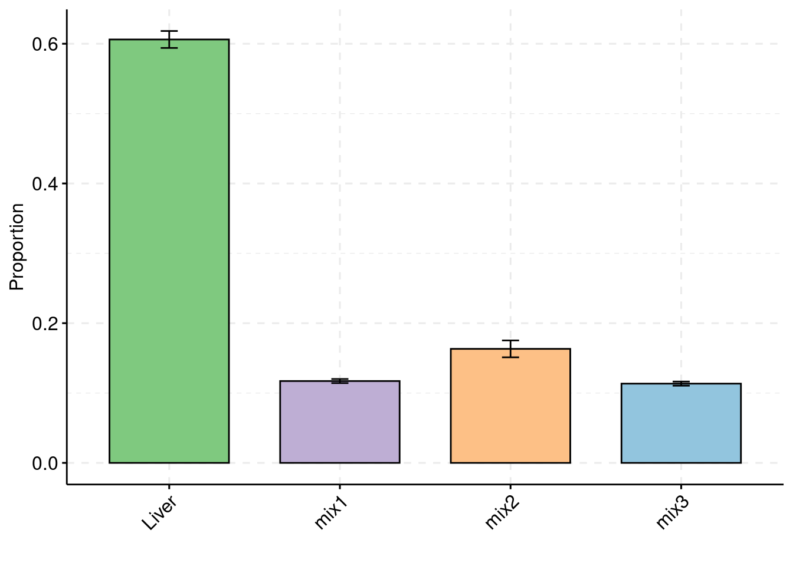
Separate effect size parameters
For the cTWAS analysis, each tissue had its own prior inclusion parameter end effect size parameter.
results_dir <- "/project2/xinhe/shengqian/cTWAS/cTWAS_simulation/simulation_uncorrelated_four_tissues_95/"
runtag = "ukb-s80.45-3_corr"
configtag <- 2
simutags <- paste(1, 1:3, sep = "-")
thin <- 0.1
sample_size <- 45000
PIP_threshold <- 0.8#results using PIP threshold (gene+tissue)
results_df[,c("simutag", "n_causal", "n_detected_pip", "n_detected_pip_in_causal")] simutag n_causal n_detected_pip n_detected_pip_in_causal
1 1-1 176 1 1
2 1-2 178 3 3
3 1-3 200 21 14#mean percent causal using PIP > 0.8
sum(results_df$n_detected_pip_in_causal)/sum(results_df$n_detected_pip)[1] 0.72#results using combined PIP threshold
results_df[,c("simutag", "n_causal_combined", "n_detected_comb_pip", "n_detected_comb_pip_in_causal")] simutag n_causal_combined n_detected_comb_pip n_detected_comb_pip_in_causal
1 1-1 175 53 48
2 1-2 175 60 54
3 1-3 197 63 57#mean percent causal using combined PIP > 0.8
sum(results_df$n_detected_comb_pip_in_causal)/sum(results_df$n_detected_comb_pip)[1] 0.9034091#prior inclusion and mean prior inclusion
results_df[,c(which(colnames(results_df)=="simutag"), setdiff(grep("prior", names(results_df)), grep("prior_var", names(results_df))))] simutag prior_snp prior_weight1 prior_weight2 prior_weight3 prior_weight4
1 1-1 0.0002156299 0.009754366 0.003853150 0.009011783 0.004044699
2 1-2 0.0002286522 0.021176055 0.004074381 0.003607471 0.005337731
3 1-3 0.0002548608 0.022754393 0.006421529 0.002955947 0.004590780colMeans(results_df[,setdiff(grep("prior", names(results_df)), grep("prior_var", names(results_df)))]) prior_snp prior_weight1 prior_weight2 prior_weight3 prior_weight4
0.0002330476 0.0178949378 0.0047830197 0.0051917339 0.0046577367 #prior variance and mean prior variance
results_df[,c(which(colnames(results_df)=="simutag"), grep("prior_var", names(results_df)))] simutag prior_var_snp prior_var_weight1 prior_var_weight2 prior_var_weight3
1 1-1 10.016861 10.00122 56.660406 11.854264
2 1-2 8.851659 14.60905 24.140806 24.871112
3 1-3 8.286763 20.17711 9.179338 3.275441
prior_var_weight4
1 56.92859
2 10.20275
3 10.66796colMeans(results_df[,grep("prior_var", names(results_df))]) prior_var_snp prior_var_weight1 prior_var_weight2 prior_var_weight3
9.051761 14.929124 29.993517 13.333606
prior_var_weight4
25.933100 #PVE and mean PVE
results_df[,c(which(colnames(results_df)=="simutag"), grep("pve", names(results_df)))] simutag pve_snp pve_weight1 pve_weight2 pve_weight3 pve_weight4
1 1-1 0.2542569 0.01603163 0.031506148 0.015397484 0.033228934
2 1-2 0.2382497 0.05083848 0.014194273 0.012931906 0.007859119
3 1-3 0.2486109 0.07544836 0.008506473 0.001395503 0.007067527colMeans(results_df[,grep("pve", names(results_df))]) pve_snp pve_weight1 pve_weight2 pve_weight3 pve_weight4
0.247039159 0.047439489 0.018068965 0.009908298 0.016051860 #TWAS results
results_df[,c(which(colnames(results_df)=="simutag"), grep("twas", names(results_df)))] simutag n_detected_twas n_detected_twas_in_causal n_detected_comb_twas
1 1-1 352 53 98
2 1-2 274 50 79
3 1-3 307 54 86
n_detected_comb_twas_in_causal
1 53
2 50
3 53sum(results_df$n_detected_comb_twas_in_causal)/sum(results_df$n_detected_comb_twas)[1] 0.5931559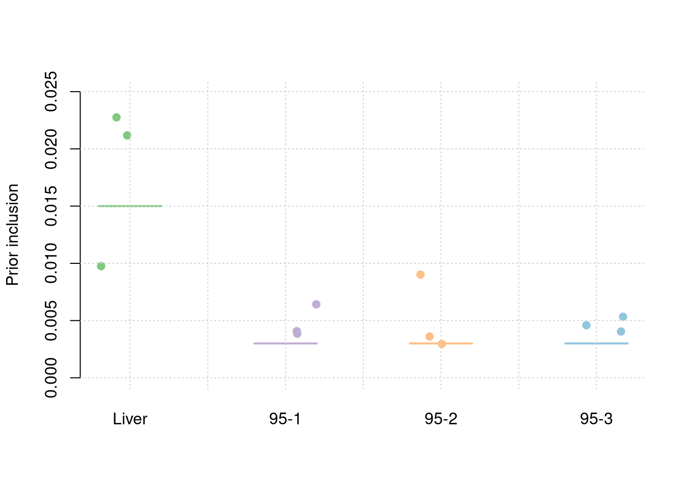
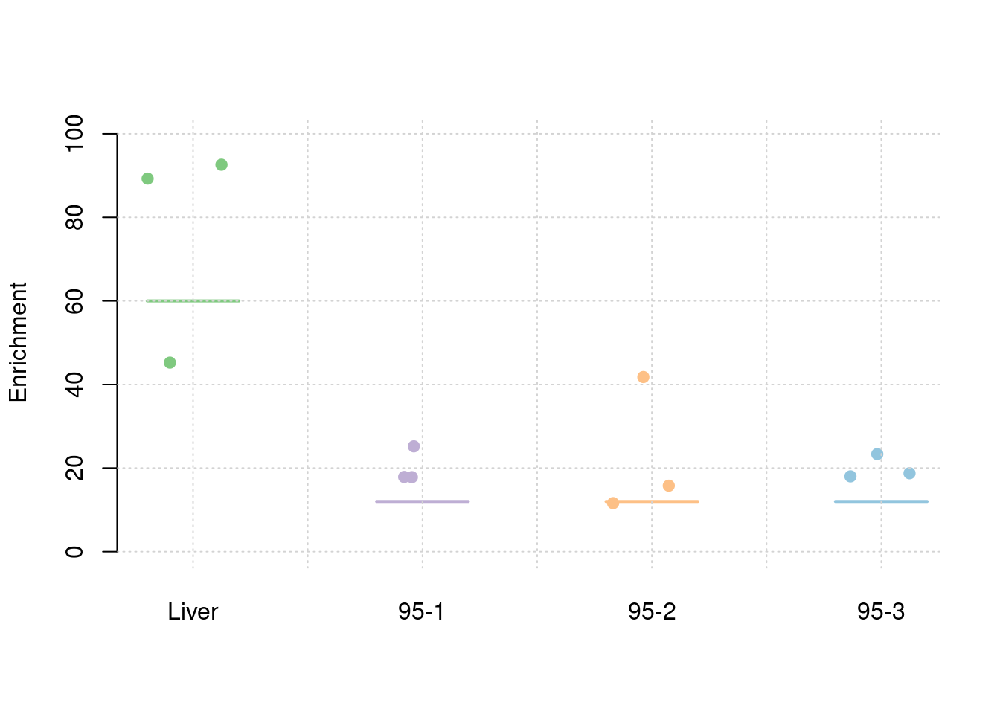
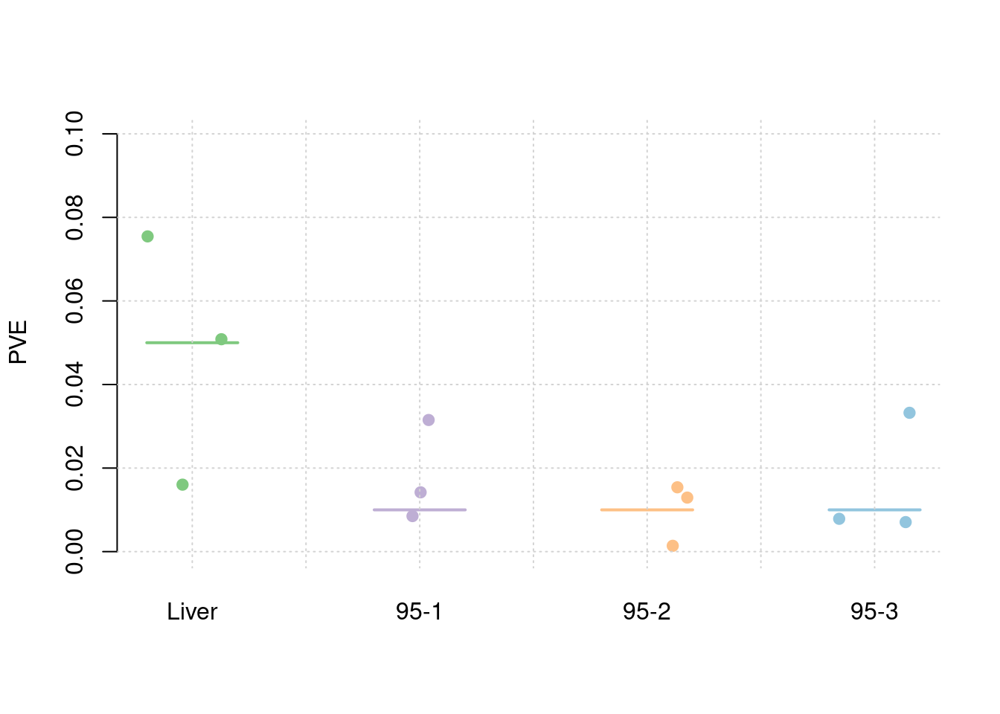
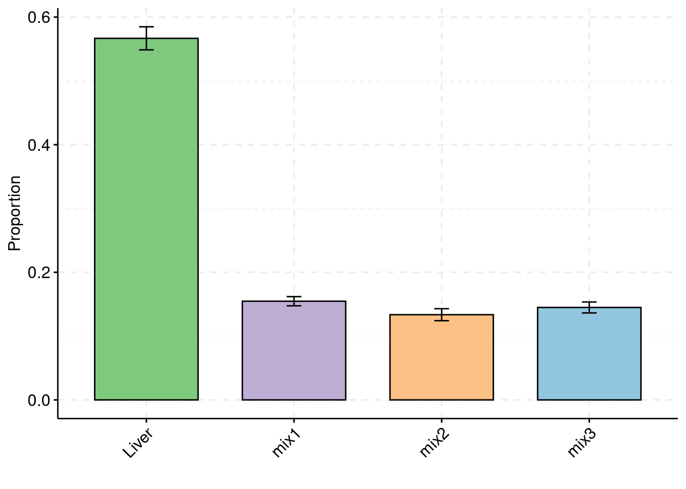 ## Simulation 2: Liver and 50% correlated tissues
Separate effect size parameters
For the cTWAS analysis, each tissue had its own prior inclusion parameter end effect size parameter.
results_dir <- "/project2/xinhe/shengqian/cTWAS/cTWAS_simulation/simulation_uncorrelated_four_tissues_50/"
runtag = "ukb-s80.45-3_corr"
configtag <- 2
simutags <- paste(1, 1:3, sep = "-")
thin <- 0.1
sample_size <- 45000
PIP_threshold <- 0.8#results using PIP threshold (gene+tissue)
results_df[,c("simutag", "n_causal", "n_detected_pip", "n_detected_pip_in_causal")] simutag n_causal n_detected_pip n_detected_pip_in_causal
1 1-1 181 20 17
2 1-2 189 9 7
3 1-3 178 22 16#mean percent causal using PIP > 0.8
sum(results_df$n_detected_pip_in_causal)/sum(results_df$n_detected_pip)[1] 0.7843137#results using combined PIP threshold
results_df[,c("simutag", "n_causal_combined", "n_detected_comb_pip", "n_detected_comb_pip_in_causal")] simutag n_causal_combined n_detected_comb_pip n_detected_comb_pip_in_causal
1 1-1 180 55 50
2 1-2 188 45 40
3 1-3 178 71 63#mean percent causal using combined PIP > 0.8
sum(results_df$n_detected_comb_pip_in_causal)/sum(results_df$n_detected_comb_pip)[1] 0.8947368#prior inclusion and mean prior inclusion
results_df[,c(which(colnames(results_df)=="simutag"), setdiff(grep("prior", names(results_df)), grep("prior_var", names(results_df))))] simutag prior_snp prior_weight1 prior_weight2 prior_weight3 prior_weight4
1 1-1 0.0002350076 0.021212973 0.008084894 0.008906379 0.003546911
2 1-2 0.0002244601 0.006141248 0.010388003 0.002017603 0.002129400
3 1-3 0.0002545989 0.014210689 0.011878563 0.006344062 0.003998068colMeans(results_df[,setdiff(grep("prior", names(results_df)), grep("prior_var", names(results_df)))]) prior_snp prior_weight1 prior_weight2 prior_weight3 prior_weight4
0.0002380222 0.0138549704 0.0101171534 0.0057560148 0.0032247932 #prior variance and mean prior variance
results_df[,c(which(colnames(results_df)=="simutag"), grep("prior_var", names(results_df)))] simutag prior_var_snp prior_var_weight1 prior_var_weight2 prior_var_weight3
1 1-1 8.681052 10.49673 3.341442 5.257904
2 1-2 9.506664 51.85556 16.651411 5.853073
3 1-3 8.914319 23.52398 13.154874 13.600157
prior_var_weight4
1 73.938139
2 2.786334
3 7.012010colMeans(results_df[,grep("prior_var", names(results_df))]) prior_var_snp prior_var_weight1 prior_var_weight2 prior_var_weight3
9.034012 28.625427 11.049242 8.237044
prior_var_weight4
27.912161 #PVE and mean PVE
results_df[,c(which(colnames(results_df)=="simutag"), grep("pve", names(results_df)))] simutag pve_snp pve_weight1 pve_weight2 pve_weight3 pve_weight4
1 1-1 0.2401522 0.03659160 0.004111114 0.007218933 0.0404276064
2 1-2 0.2511884 0.05233324 0.026322937 0.001820451 0.0009146388
3 1-3 0.2671634 0.05493532 0.023779452 0.013300577 0.0043216730colMeans(results_df[,grep("pve", names(results_df))]) pve_snp pve_weight1 pve_weight2 pve_weight3 pve_weight4
0.252834660 0.047953390 0.018071168 0.007446653 0.015221306 #TWAS results
results_df[,c(which(colnames(results_df)=="simutag"), grep("twas", names(results_df)))] simutag n_detected_twas n_detected_twas_in_causal n_detected_comb_twas
1 1-1 283 53 106
2 1-2 342 53 119
3 1-3 315 62 117
n_detected_comb_twas_in_causal
1 54
2 54
3 62sum(results_df$n_detected_comb_twas_in_causal)/sum(results_df$n_detected_comb_twas)[1] 0.497076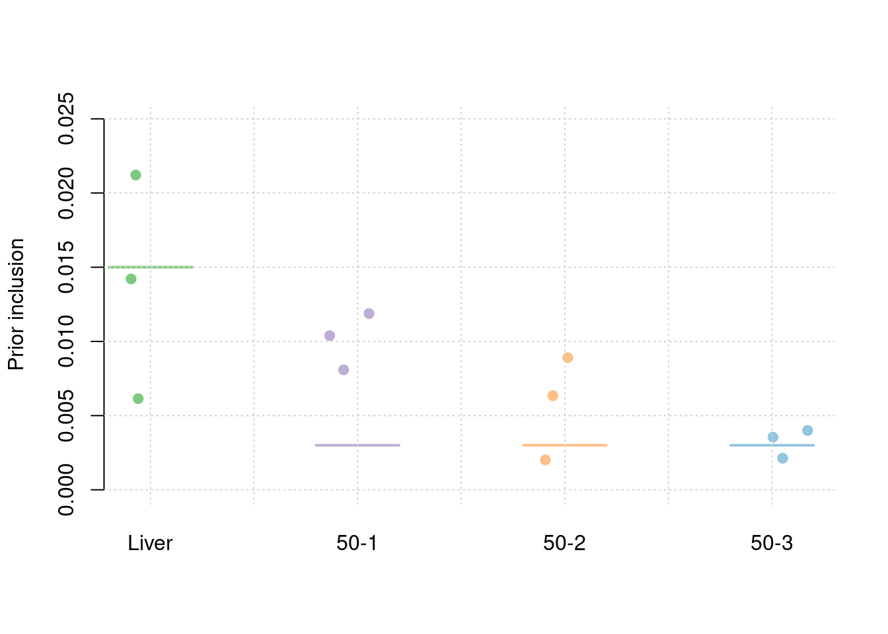
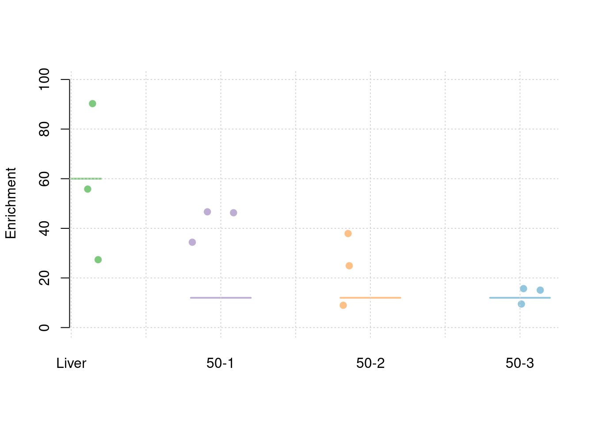
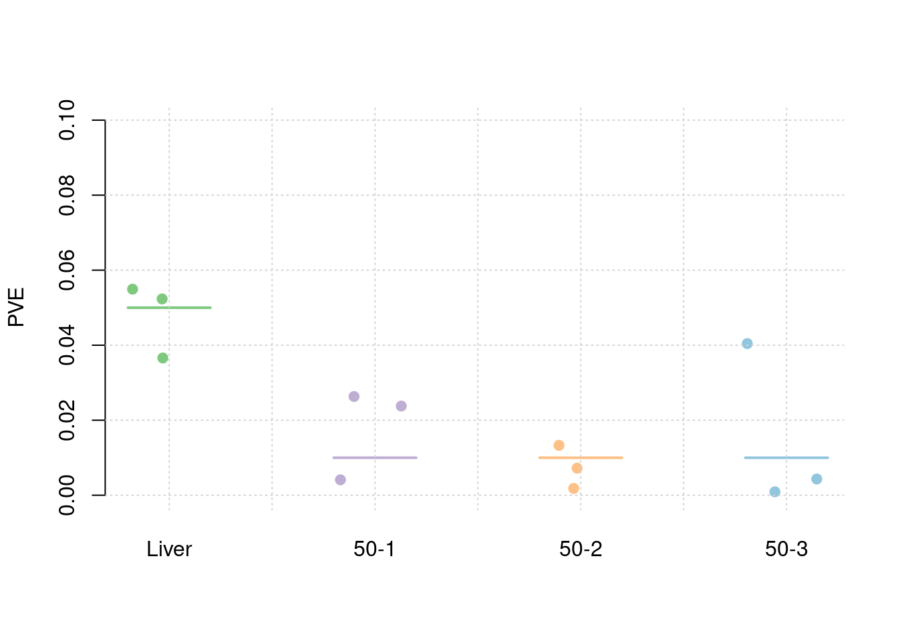
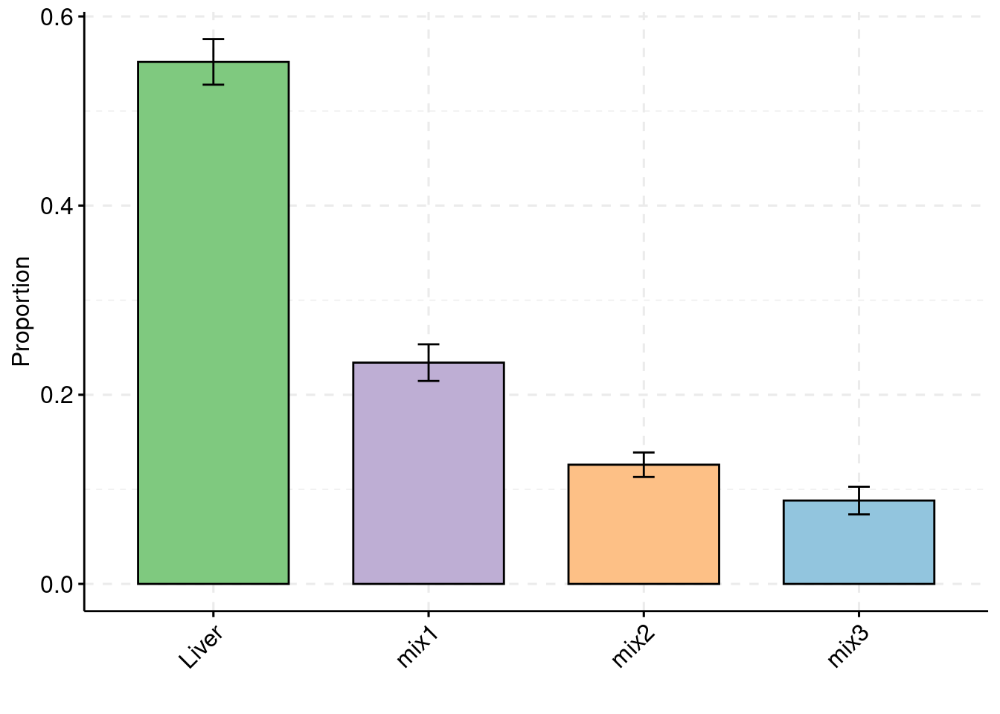
Simulation 3: Liver and 5% correlated tissues
Separate effect size parameters
For the cTWAS analysis, each tissue had its own prior inclusion parameter end effect size parameter.
results_dir <- "/project2/xinhe/shengqian/cTWAS/cTWAS_simulation/simulation_uncorrelated_four_tissues_05/"
runtag = "ukb-s80.45-3_corr"
configtag <- 2
simutags <- paste(1, 1:3, sep = "-")
thin <- 0.1
sample_size <- 45000
PIP_threshold <- 0.8#results using PIP threshold (gene+tissue)
results_df[,c("simutag", "n_causal", "n_detected_pip", "n_detected_pip_in_causal")] simutag n_causal n_detected_pip n_detected_pip_in_causal
1 1-1 182 23 21
2 1-2 171 24 23
3 1-3 180 17 15#mean percent causal using PIP > 0.8
sum(results_df$n_detected_pip_in_causal)/sum(results_df$n_detected_pip)[1] 0.921875#results using combined PIP threshold
results_df[,c("simutag", "n_causal_combined", "n_detected_comb_pip", "n_detected_comb_pip_in_causal")] simutag n_causal_combined n_detected_comb_pip n_detected_comb_pip_in_causal
1 1-1 181 58 50
2 1-2 170 47 43
3 1-3 180 40 36#mean percent causal using combined PIP > 0.8
sum(results_df$n_detected_comb_pip_in_causal)/sum(results_df$n_detected_comb_pip)[1] 0.8896552#prior inclusion and mean prior inclusion
results_df[,c(which(colnames(results_df)=="simutag"), setdiff(grep("prior", names(results_df)), grep("prior_var", names(results_df))))] simutag prior_snp prior_weight1 prior_weight2 prior_weight3 prior_weight4
1 1-1 0.0002365878 0.01220395 0.006245601 0.002380125 0.005435014
2 1-2 0.0002702815 0.01264810 0.003874380 0.003446936 0.004534815
3 1-3 0.0002706864 0.01373695 0.001432265 0.002097530 0.001674452colMeans(results_df[,setdiff(grep("prior", names(results_df)), grep("prior_var", names(results_df)))]) prior_snp prior_weight1 prior_weight2 prior_weight3 prior_weight4
0.0002591852 0.0128630025 0.0038507491 0.0026415307 0.0038814268 #prior variance and mean prior variance
results_df[,c(which(colnames(results_df)=="simutag"), grep("prior_var", names(results_df)))] simutag prior_var_snp prior_var_weight1 prior_var_weight2 prior_var_weight3
1 1-1 7.973941 31.16032 13.95068 11.73871
2 1-2 8.194644 27.41263 18.42119 15.04309
3 1-3 8.107647 20.31424 44.11721 43.79737
prior_var_weight4
1 12.48241
2 12.41527
3 44.11027colMeans(results_df[,grep("prior_var", names(results_df))]) prior_var_snp prior_var_weight1 prior_var_weight2 prior_var_weight3
8.092077 26.295729 25.496361 23.526386
prior_var_weight4
23.002649 #PVE and mean PVE
results_df[,c(which(colnames(results_df)=="simutag"), grep("pve", names(results_df)))] simutag pve_snp pve_weight1 pve_weight2 pve_weight3 pve_weight4
1 1-1 0.2220739 0.06249251 0.01424098 0.004576506 0.011095950
2 1-2 0.2607225 0.05697729 0.01166515 0.008493450 0.009208331
3 1-3 0.2583411 0.04585817 0.01032765 0.015047700 0.012080297colMeans(results_df[,grep("pve", names(results_df))]) pve_snp pve_weight1 pve_weight2 pve_weight3 pve_weight4
0.247045851 0.055109321 0.012077926 0.009372552 0.010794860 #TWAS results
results_df[,c(which(colnames(results_df)=="simutag"), grep("twas", names(results_df)))] simutag n_detected_twas n_detected_twas_in_causal n_detected_comb_twas
1 1-1 371 62 134
2 1-2 290 52 116
3 1-3 348 54 135
n_detected_comb_twas_in_causal
1 62
2 53
3 54sum(results_df$n_detected_comb_twas_in_causal)/sum(results_df$n_detected_comb_twas)[1] 0.438961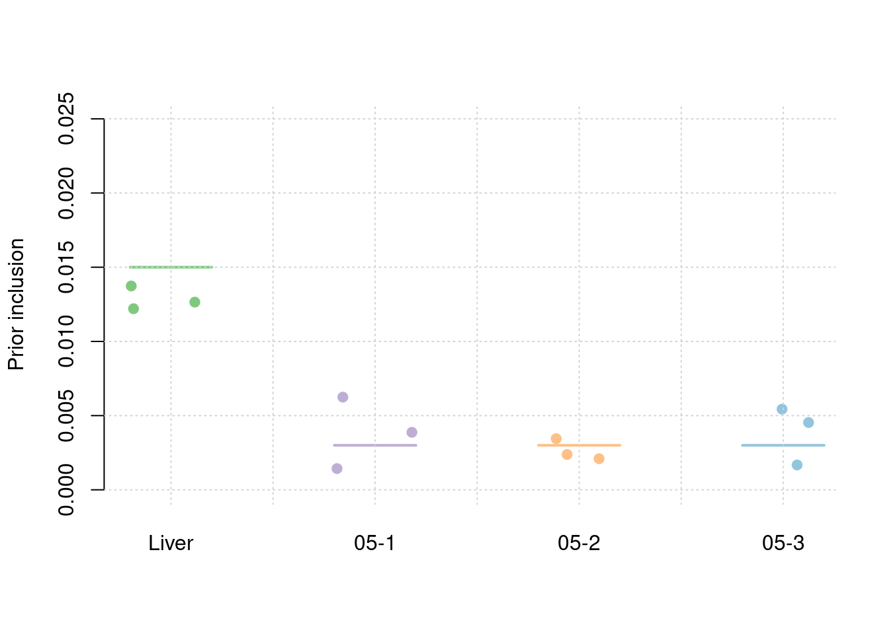
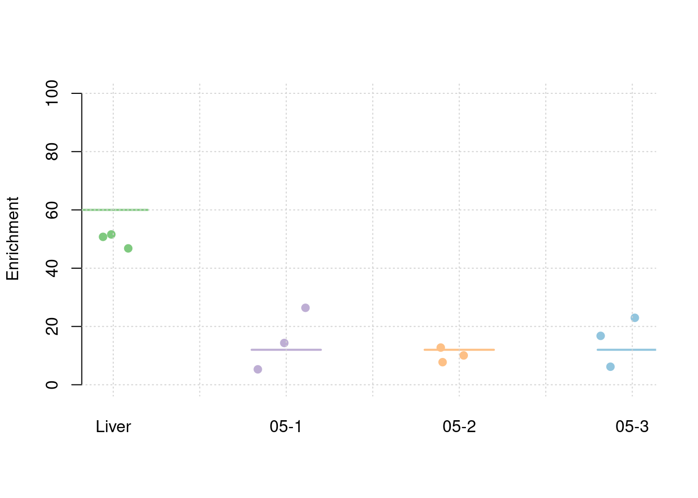
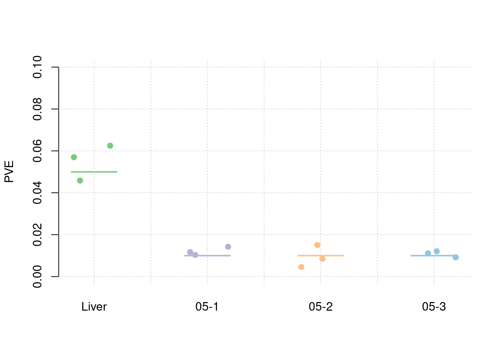

sessionInfo()R version 4.2.0 (2022-04-22)
Platform: x86_64-pc-linux-gnu (64-bit)
Running under: CentOS Linux 7 (Core)
Matrix products: default
BLAS/LAPACK: /software/openblas-0.3.13-el7-x86_64/lib/libopenblas_haswellp-r0.3.13.so
locale:
[1] LC_CTYPE=en_US.UTF-8 LC_NUMERIC=C
[3] LC_TIME=en_US.UTF-8 LC_COLLATE=en_US.UTF-8
[5] LC_MONETARY=en_US.UTF-8 LC_MESSAGES=en_US.UTF-8
[7] LC_PAPER=en_US.UTF-8 LC_NAME=C
[9] LC_ADDRESS=C LC_TELEPHONE=C
[11] LC_MEASUREMENT=en_US.UTF-8 LC_IDENTIFICATION=C
attached base packages:
[1] stats graphics grDevices utils datasets methods base
other attached packages:
[1] ggpubr_0.6.0 ggplot2_3.4.4 workflowr_1.7.0
loaded via a namespace (and not attached):
[1] tidyselect_1.2.0 xfun_0.32 bslib_0.4.0 purrr_1.0.2
[5] carData_3.0-5 colorspace_2.0-3 vctrs_0.6.4 generics_0.1.3
[9] htmltools_0.5.3 yaml_2.3.5 utf8_1.2.2 rlang_1.1.1
[13] jquerylib_0.1.4 later_1.3.0 pillar_1.8.1 glue_1.6.2
[17] withr_2.5.0 DBI_1.1.3 lifecycle_1.0.3 stringr_1.5.0
[21] munsell_0.5.0 ggsignif_0.6.3 gtable_0.3.1 evaluate_0.16
[25] labeling_0.4.2 knitr_1.40 callr_3.7.2 fastmap_1.1.0
[29] httpuv_1.6.5 ps_1.7.1 fansi_1.0.3 highr_0.9
[33] broom_1.0.1 Rcpp_1.0.9 backports_1.4.1 promises_1.2.0.1
[37] scales_1.2.1 cachem_1.0.6 jsonlite_1.8.0 abind_1.4-5
[41] farver_2.1.1 fs_1.5.2 digest_0.6.29 stringi_1.7.8
[45] rstatix_0.7.2 processx_3.7.0 dplyr_1.0.10 getPass_0.2-2
[49] rprojroot_2.0.3 grid_4.2.0 cli_3.6.1 tools_4.2.0
[53] magrittr_2.0.3 sass_0.4.2 tibble_3.1.8 car_3.1-1
[57] tidyr_1.3.0 whisker_0.4 pkgconfig_2.0.3 data.table_1.14.2
[61] assertthat_0.2.1 rmarkdown_2.16 httr_1.4.4 rstudioapi_0.14
[65] R6_2.5.1 git2r_0.30.1 compiler_4.2.0